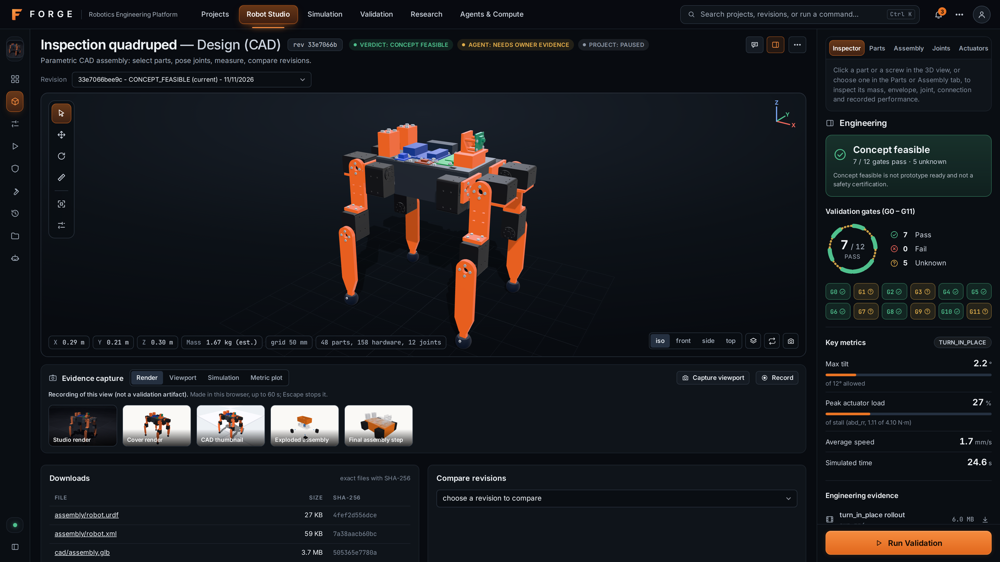
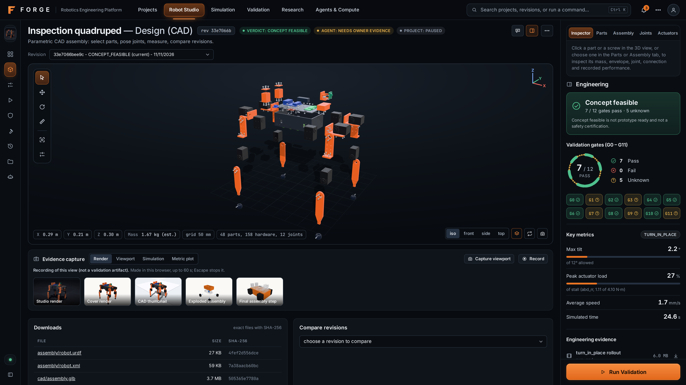
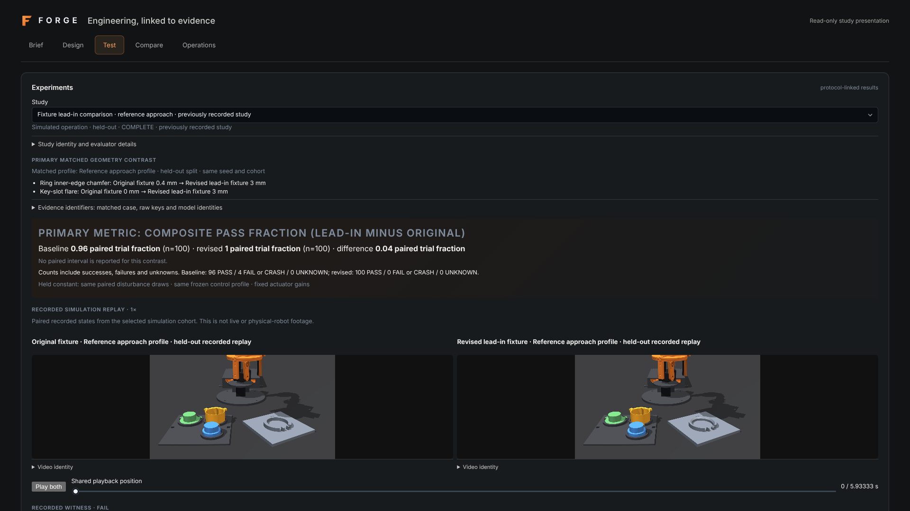
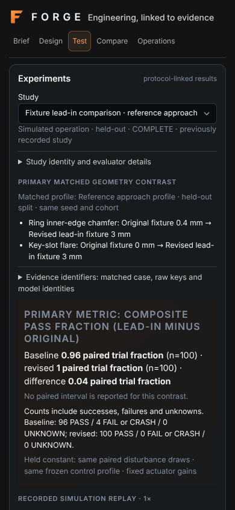
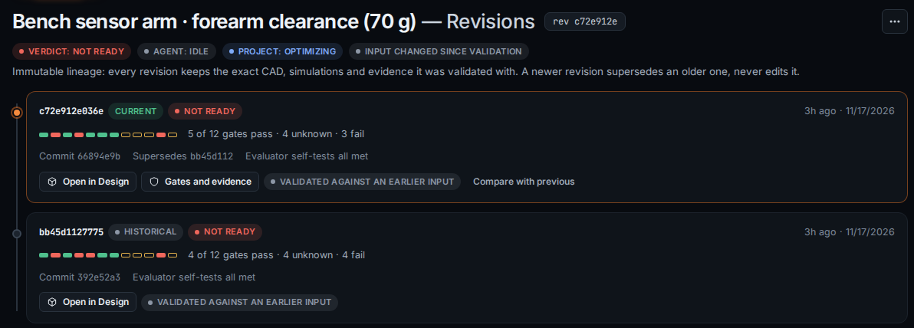

Flagship film (silent)
Downloads: widescreen film · portrait film · technical walkthrough · poster.

Fixture lead-in study
Original fixture versus a revised lead-in fixture whose ring chamfer and key-slot flare changed together. Same arm, controller and paired held-out disturbances in both conditions.
Simulated placements under the reference approach: original fixture 96/100, revised lead-in fixture 100/100. The two geometry changes are not separated, and simulated success is not physical validation.
Controlled design-repair study
The same design agent, tools, starting design and budgets in every condition; only the protected feedback differs. Outcomes are held-out scores of the last build-valid revision.
| Condition | Outcomes | Episodes | Repairs (first FAIL → selected PASS) | Revision changes* |
|---|---|---|---|---|
| A0 · build diagnostics only | FAIL 4 · PASS 14 | 18 | 0 | 3 |
| A1 · + aggregate verdict | FAIL 1 · PASS 17 | 18 | 5 | 6 |
| A2 · + typed residuals | PASS 18 | 18 | 5 | 6 |
* Selected revision differs from the first submitted one (protocol definition); a change is not necessarily a repair.
A2 minus A1 held-out success (task-level mean over 9 tasks): +0.056, 95% task-cluster bootstrap [0.000, 0.167]. Nine task clusters; the interval is descriptive and includes zero, so this study neither shows nor rules out a feedback effect. Every outcome difference came from the three six-axis arm tasks; the other six tasks passed in every condition.
Other scoped results
Wall-thickness checker
Known-answer geometry (260 cases): the revised feature-scoped checker made 0 false acceptances; the earlier sampled screen made 104. The feature checker is scored against feature-local truth; the sampled screen is scored against whole-part truth. The targets differ, so the counts do not establish superiority. Synthetic cases only.
Gantry: faster planned motion
Planned motion · 21.760 s baseline, approximately 7.474 s optimized. Both durations represent commanded motion along the same path and exclude settling and hold.
Successful complete transfers in simulation · 59/100 baseline, 58/100 optimized. Transfer reliability did not improve. The tray stayed unseated in 40/100 trials under each profile. The remaining unsuccessful outcomes were kit displacement in 1/100 baseline trial and 2/100 optimized trials.
Production model
Dispatch contributed more modeled good units than the fixture change in the tested scenarios. The discrete-event model uses a fixed empirical operation envelope. It provides no factory throughput measurement.
Technical walkthrough
Silent, chaptered evidence from the native interface, recorded simulation runs and model outputs.
Native screens





Paper and supplement
The results apply to the recorded models and simulations.
Main manuscript (12 pages) · Technical supplement (23 pages)
Evidence and reproduction
The evidence guide maps results to paper sections and links to figures and registered claims. The technical supplement describes the reproduction inputs. The selected fixture replay requires independently authorized meshes, which are excluded because their redistribution rights have not been verified.
Scope: software verification, conditional simulation and a finite production model. The study does not establish physical robot or factory performance.
Bundle manifest · File checksums · Offline access and media setup
Technical credits
Simulation used MuJoCo. See Emanuel Todorov, Tom Erez and Yuval Tassa, “MuJoCo: A physics engine for model-based control,” IROS 2012, DOI 10.1109/IROS.2012.6386109. The supplement cites the versioned documentation.
Analytical figures were generated with Matplotlib. The films use Inter typography by the Inter Project Authors under the SIL Open Font License 1.1. Robotics workflow, native interface imagery and study presentation are attributed to Suneet Dungrani. The paper describes the AI tools used in the design repair experiments.